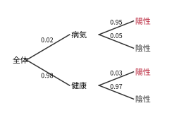
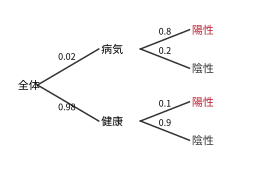
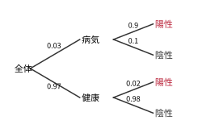

ホーム ＞ 数学A ＞ 条件付き確率・期待値
別冊練習問題 6 の解答 検査の陽性反応から病気の確率（原因の確率）
(1) ある病気にかかっている人の割合は \(\dfrac{1}{50}\) である。この病気の検査では、病気の人が陽性になる確率が \(\dfrac{19}{20}\)、病気でない人が陽性になる確率が \(\dfrac{3}{100}\) である。検査で陽性だった人が、実際に病気である確率を求めよ。
樹形図で整理
病気 \(D\)、陽性 \(T\)。

陽性になる確率
\[P(T)=\dfrac{1}{50}\cdot\dfrac{19}{20}+\dfrac{49}{50}\cdot\dfrac{3}{100}=\dfrac{121}{2500}\]条件付き確率
\[P(D\mid T)=\dfrac{P(D\cap T)}{P(T)}=\dfrac{\dfrac{19}{1000}}{\dfrac{121}{2500}}=\dfrac{95}{242}\]【答案】
\[\dfrac{95}{242}\]答
(2) ある病気にかかっている人の割合は \(\dfrac{1}{50}\) である。この病気の検査では、病気の人が陽性になる確率が \(\dfrac{4}{5}\)、病気でない人が陽性になる確率が \(\dfrac{1}{10}\) である。検査で陽性だった人が、実際に病気である確率を求めよ。
樹形図で整理
病気 \(D\)、陽性 \(T\)。

陽性になる確率
\[P(T)=\dfrac{1}{50}\cdot\dfrac{4}{5}+\dfrac{49}{50}\cdot\dfrac{1}{10}=\dfrac{57}{500}\]条件付き確率
\[P(D\mid T)=\dfrac{P(D\cap T)}{P(T)}=\dfrac{\dfrac{2}{125}}{\dfrac{57}{500}}=\dfrac{8}{57}\]【答案】
\[\dfrac{8}{57}\]答
(3) ある病気にかかっている人の割合は \(\dfrac{3}{100}\) である。この病気の検査では、病気の人が陽性になる確率が \(\dfrac{9}{10}\)、病気でない人が陽性になる確率が \(\dfrac{1}{50}\) である。検査で陽性だった人が、実際に病気である確率を求めよ。
樹形図で整理
病気 \(D\)、陽性 \(T\)。

陽性になる確率
\[P(T)=\dfrac{3}{100}\cdot\dfrac{9}{10}+\dfrac{97}{100}\cdot\dfrac{1}{50}=\dfrac{29}{625}\]条件付き確率
\[P(D\mid T)=\dfrac{P(D\cap T)}{P(T)}=\dfrac{\dfrac{27}{1000}}{\dfrac{29}{625}}=\dfrac{135}{232}\]【答案】
\[\dfrac{135}{232}\]答